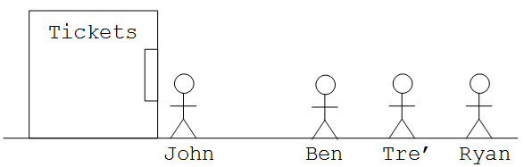
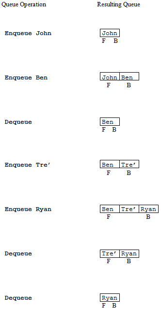

7.1 Introduction
This chapter looks at the topic of data structures, which is concerned with the various ways data can be organized within a computer program. This subject should not be confused with databases, which were discussed in Chapter 3. Remember that databases are applications for organizing and storing large quantities of information in a flexible manner so that people can ask questions about that data. In contrast, data structures are internal program objects that enable data to be manipulated efficiently by computer programs.
This chapter is organized in the following way. After this introduction, Section 7.2 presents five of the most common “higher-level” data structures. These include: stacks, queues, general lists, trees, and graphs. These structures are “higher-level” in the sense that they are not generally included as built-in components of programming languages. Instead, they must be implemented by programmers using the statements and “lower-level” data structures provided by the programming languages. In Section 7.3 we take a look at three common lower-level data structures: variables, arrays, and records. This section also introduces three data types common to most programming languages: integers, reals, and character strings.
Section 7.4 describes, in general terms, how the higher-level data structures of Section 7.2 may be implemented by using the lower-level data structures of Section 7.3, together with simple algorithms of the type discussed in Chapter 5. The final section of this chapter looks at the topic of Abstract Data Types which is illustrated using a stack. Emphasis is placed on understanding why this topic is important from a computing standpoint.
7.2 Higher-level data structures
In this section five common “higher-level” data structures are introduced. They are: stacks, queues, lists, trees, and graphs. Each of these structures represents a way to organize data so that it may be applied to solve certain problems in an efficient manner.
Three of these structures: stacks, queues, and lists; are linear in nature – their items logically exist one after another in sequential order. The other two structures, trees and graphs, are non-sequential – their contents can not be meaningfully represented by a simple sequential listing.

Figure 7.1: A stack of three blocks
7.2.1 Stacks
In this section of the chapter the “stack” data structure is introduced. Stack data structures are used, among other things, to model the behavior of stacks of real-world objects. In order to understand this structure let’s begin by thinking about a simple stack of blocks, such as the one shown in Figure 7.1. In this stack “A” is the top block, “B” is beneath “A”, and “C” is the bottom block. Assuming the blocks were added one at a time, how must this stack have been built? Well, first the bottom block, “C”, must have been set, then “B” would have been placed on top of “C”, and finally “A” would have been placed on top of “B”. Note that the blocks must be added to the stack from bottom to top: “C”, then “B”, then “A”. The last block placed on the stack will be the top block.
Now, let’s think about removing a block from the stack. As any child could demonstrate, the block that is most easily accessible is the top block, “A” in this case. Removing “A” from the stack leaves us with “B” sitting on top of “C”. It is interesting to note that the first item to be removed from the stack, “A”, was the last item added to the stack (remember the blocks were added in the order C-B-A). In fact, assuming you don’t “cheat” and grab an item from the middle of the stack, the last item added on the stack would always be the first taken off. For this reason, stacks are known as Last-In, First-Out (LIFO) structures.
As mentioned earlier, the stack data structure models the behavior of real-world stacks of objects. The two primary operations that can be applied to stack data structures are “push” and “pop”. The push operator is used to add a new item onto the top of the stack. The pop operator is used to remove the top item from the stack. Stack data structures do not support the removal of items from the middle of the stack. The stack of real-world blocks in Figure 7.1 could thus be modeled by applying the following operations to a initially empty stack data structure:
- Push C
- Push B
- Push A
The removal of “A” could be accomplished by issuing the Pop command.

Figure 7.2: Operations on a stack
To be a little more formal, the stack data structure can be defined as a specialized type of list (an ordered sequence of items) in which all insertions to, and deletions from, the list take place at one end. The end of the list where the insertions and deletions are performed is known as the top of the stack. Stacks are usually drawn vertically, so that the item at “top” of the stack appears literally as the topmost item in the structure but they could just as easily be drawn “sideways” or “upside down”.
In order to ensure that you have a clear understanding of the behavior of the stack data structure, Figure 7.2 presents a sequence of stack operations and a pictorial representation of the stack that would result after each operation is applied. Note again that the “pop” operation always removes the last item placed on the top of the stack.
Now that you have some understanding of how stacks behave, it is natural to ask “so what?” Why are stacks of interest to computer scientists?
In the real-world we routinely encounter stacks of objects – CD’s, dishes, bills. We use these stacks to temporarily hold objects until we are ready to use or “process” them in some way. One important characteristic of all stacks – both the real-world type and their software counterpart – is that due to their LIFO nature they reverse the order of the objects they hold. (If you place three CD’s in a stack, Cracker, then Pink Floyd, then Everclear, and then play the top one, you will be listening to Everclear, not Cracker.) In everyday life, we tend to use stacks in situations where order is unimportant, such as for holding identical, non-perishable items like dinner plates.
In a similar manner, stack data structures are used by computer software to temporarily hold data “objects” until they can be processed by the computer. However, instead of de-emphasizing the LIFO nature of stacks, in computing stacks tend to be used almost exclusively in situations where we specifically want to process items in the opposite order than they were added to the structure.
One common use of stacks in computing is to manage the execution of interruptible tasks. The utility of stacks for this purpose can easily be seen by a real-world analogy. Say you are typing an English paper (Task One) and the phone rings. You pick up the phone (i.e., place Task One on the stack of “on hold” processes) and begin a conversation with your significant other, Pat (Task Two). During this conversation your phone clicks indicating someone else it trying to call you, so you put Pat on hold (i.e., place Task Two on the stack of “on hold” processes) and take a call from your mom (Task Three). After a brief talk with mom, you switch back to Pat (i.e., after Task Three completes, you pop Task Two off the stack of “on hold” processes and restart it from the point you left off). Finally, after a not-so-brief conversation with Pat, you return to your English paper (i.e., after Task Two completes, you pop Task One off the stack of “on hold” processes and restart it where you left off).
Note that in order to handle these interruptible tasks properly, a data structure such as a stack that incorporates Last-In, First-Out behavior must be employed.
Figure 7.3: A real-world example of a queue (or waiting line)
7.2.2 Queues
In America, a waiting line, such as the kind you encounter at a bank or supermarket, is simply referred to as a “line”. In Britain, a waiting line is called a “queue” (pronounced like the letter “Q”). Figure 7.3 illustrates a real-world queue that you might encounter at a local movie theater. John is buying a ticket to see the next Star Wars movie. Ben, Tre’ and Ryan are waiting in line to buy their tickets. The three of them are thus considered to be waiting in the queue. Since John is in the process of buying his ticket, he is not considered to be part of the queue – he is not “waiting”. Ben is at the front, or head, of the queue. He will be the next person to be served. Ryan is at the back, or end, of the line. He must wait for everyone ahead of him to be served before he gets to buy his ticket.
Queues are known as First-In, First-Out (FIFO) structures. Assuming no one “breaks” in line, the first person to enter the queue will be the first person leave the queue (and thus be the first one served). Queues are extremely useful, both in the real-world and in computing, because they enable us to control access to scarce resources, such as Star Wars tickets in the current example.
The queue data structure models the behavior of real-world queues. It supports two primary operations: “enqueue” and “dequeue”. The enqueue operator is used to add a new item to the back of the queue. This operator is analogous to a person getting in line. The dequeue operator is used to remove an item from the front of the queue. This operation is analogous to having the person at the head of the line step forward to be served.
More formally, a queue is a list in which all insertions take place at one end, the back of the queue, and all deletions take place at the opposite end, the front or head of the queue. The basic queue data structure does not allow the insertion or deletion of items from the middle of the list. Thus, it does not support concepts like people “breaking” in line or giving up and leaving because the line to too long.
Figure 7.4: Operations on a Queue
Figure 7.4 presents a sequence of operations applied to an initially empty queue, and illustrates the resulting queue configurations. In order to help you clearly distinguish between the behavior of stacks verses queue, Figure 7.4 uses the same data presented in Figure 7.2 along with the same pattern of operations applied to the structure. Notice that even though the order of operations is the same in both of these figures, the contents of the two structures is quite different.